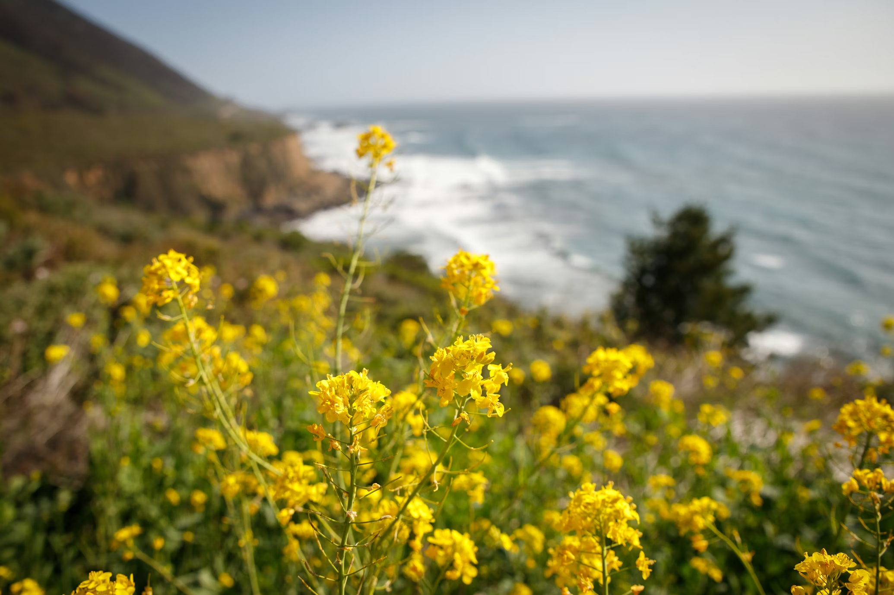
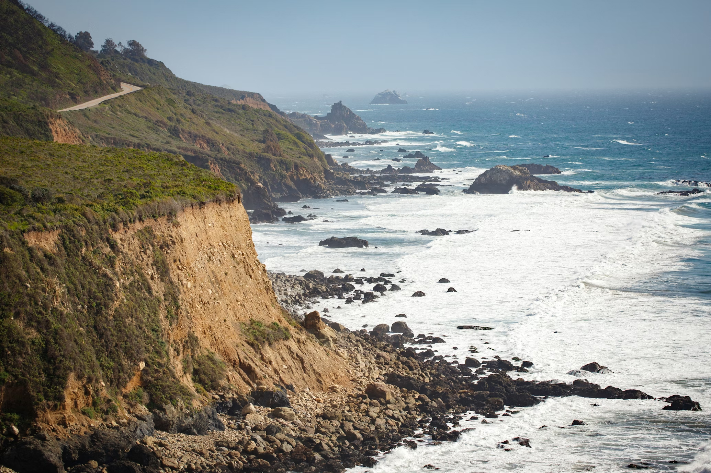
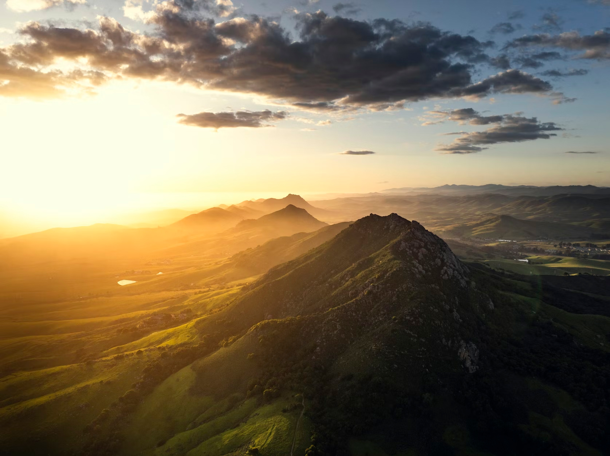

#1 Central Coast
San Luis Obispo is a mountain biker's dream tucked between the Santa Lucia Range and the Pacific, offering an impressive variety of trails within minutes of downtown. The city has cultivated a strong riding culture over the decades, supported by dedicated local advocacy groups, well-stocked bike shops, and a population that genuinely embraces life outdoors. Trails here range from smooth, beginner-friendly loops to gnarly technical lines that will humble even experienced riders. The compact geography of the area means you can often ride directly from town to trailhead, skipping the car shuttle entirely and extending your adventure from the very first pedal stroke.
The Irish Hills Natural Reserve is arguably the heartbeat of SLO mountain biking, a sprawling open space preserve that sits just west of the city with views stretching out toward Morro Bay and the Pacific. The Felsman Loop is a local favorite, combining rolling terrain, open grassland, and just enough technical challenge to keep things interesting from start to finish. Side trails and connectors add variety for those who want to explore deeper into the reserve, and the well-maintained fire roads offer a gentler option for riders building their fitness or confidence. Sunsets from the upper ridgelines here are the kind that make you stop pedaling mid-descent just to take them in.

Reservoir Canyon Natural Reserve on the north side of town offers a completely different flavor, with a steep, shaded climb through a narrow canyon dense with native vegetation. The trail gains elevation quickly, rewarding persistent riders with panoramic views of the SLO valley and surrounding peaks from the top. It's a beloved out-and-back that doubles as a solid fitness climb and a genuinely beautiful natural escape just minutes from downtown. The canyon walls and trickling creek alongside the lower trail create a cool, sheltered microclimate that makes it especially appealing on warm afternoons when the sun is bearing down on more exposed terrain.
For riders craving longer, more adventurous days in the saddle, the broader network connecting SLO to neighboring open spaces opens up serious possibilities. The Islay Creek Trail in Montana de Oro State Park, a short drive down the coast, rewards the effort with rugged coastal terrain, eucalyptus groves, and stunning ocean views that few trail systems anywhere can rival. Madonna Mountain, rising sharply near the heart of town, offers punchy climbs and quick descents that locals squeeze in before work or during lunch breaks. Combining these destinations into a longer ride or multi-stop day is a rite of passage for anyone serious about getting to know the region's full trail offering.

What makes mountain biking in San Luis Obispo truly special is how seamlessly it weaves into the fabric of everyday life in the city. The mild year-round climate means there's rarely a reason to leave the bike hanging in the garage, and trails stay accessible and enjoyable through every season. Local shops like the Ride On and Central Coast Outdoors foster community through group rides, skills clinics, and events that bring riders of all backgrounds together. There's a low-ego, high-stoke energy to the SLO riding scene that welcomes beginners without boring experts, making it one of those rare places where the trails and the community around them are equally worth showing up for.
